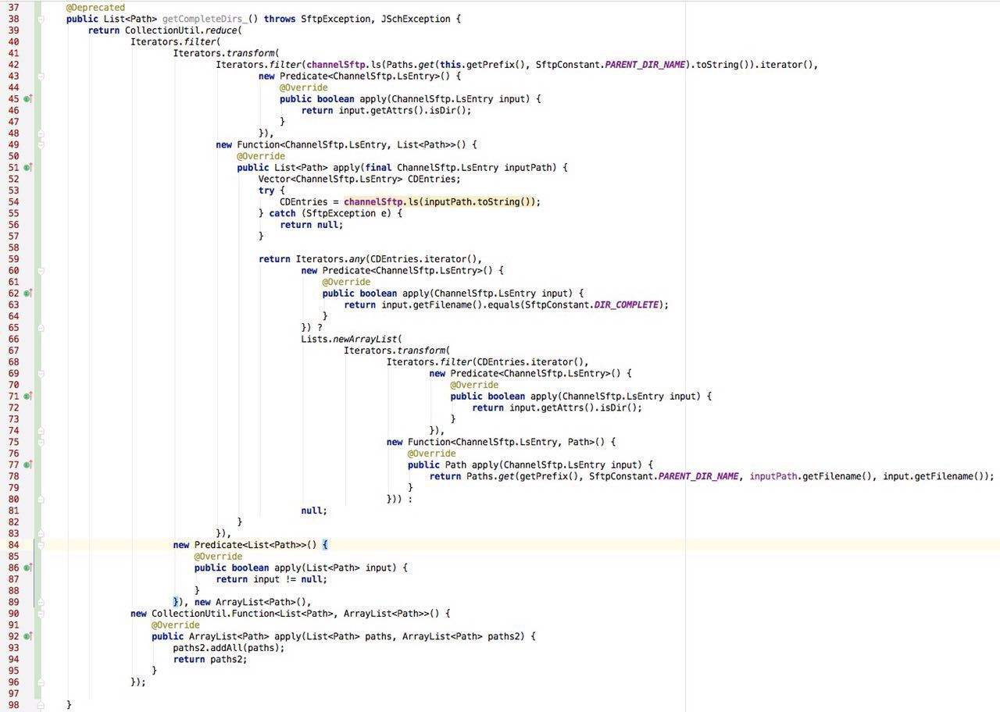

函数式编程中重要的几个函数：map, reduce, filter
python 2:
map:
1. 直接使用列表展开
print [_ * _ for _ in [1, 2, 3]]
输出：
[1, 4, 9]
如果想对多个列表使用map操作可以借助zip
print [i + j for (i, j) in zip([1, 2, 3], [4, 5, 6])]
输出：
[5, 7, 9]
2. 用map函数
print map(lambda a, b: a + b, [1, 2, 3], [4, 5, 6])
输出：
[5, 7, 9]
filter:
1. 使用带条件的列表展开
print [_ for _ in [1, 2, 3] if _ > 2]
输出：
[3]
2. 用filter函数
print filter(lambda a: a > 2, [1, 2, 3])
输出：
[3]
reduce:
print reduce(lambda a, b: a + b, [1, 2, 3], 100)
输出：
106
Python 3
Python 3与Python 2差异不大，除了reduce函数不再是Build-in函数，而是移到了functools包中。
Java 7
在Java 7中，这些功能主要是通过Guava实现的，以操作对象为Iterator举例：
map:
使用Iterators.transform
System.out.println(Lists.newArrayList(Iterators.transform(Lists.newArrayList(1, 2, 3).iterator(),
new Function<Integer, Integer>() {
@Override
public Integer apply(Integer input) {
return input * input;
}
})));
输出：
[1, 4, 9]
filter:
使用Iterators.filter
System.out.println(Lists.newArrayList(Iterators.filter(Lists.newArrayList(1, 2, 3).iterator(),
new Predicate<Integer>() {
@Override
public boolean apply(Integer input) {
return input > 2;
}
})));
输出：
[3]
reduce:
reduce功能Guava没有提供，需要自己来实现：
public class Reduce {
public interface Function<T, R>{
R apply(T t, R r);
}
public static <T, R> R reduce(final Iterator<? extends T> iterator, final R begin, final Function<? super T, R> function){
R ret = begin;
while (iterator.hasNext()){
ret = function.apply(iterator.next(), ret);
}
return ret;
}
}
列表累加：
System.out.println(Reduce.reduce(Lists.newArrayList(1, 2, 3).iterator(), 10,
new Reduce.Function<Integer, Integer>() {
public Integer apply(Integer integer, Integer integer2) {
return integer + integer2;
}
}));
输出：
16
Concatenating lists:
List<ArrayList<Long>> listList = Lists.newArrayList(Lists.newArrayList(1l, 2l), Lists.newArrayList(2l, 3l));
List<Long> longs = Reduce.reduce(listList.iterator(), new ArrayList<Long>(),
new Reduce.Function<ArrayList<Long>, ArrayList<Long>>() {
public ArrayList<Long> apply(ArrayList<Long> longs, ArrayList<Long> longs2) {
longs2.addAll(longs);
return longs2;
}
});
System.out.println(JSON.toJSONString(longs));
Output:
[1,2,2,3]
reduce多列表版（zip）:
在Python中，reduce操作可以支持多个输入列表，在Java 7 中可以自己实现(我管这种叫zip，不过不同于Python 2中Build-in的zip)：
先把Java 8中的BiFunction抄过来：
public interface BiFunction<T, U, R> {
R apply(T t, U u);
}
然后实现：
public class Zip {
public static <T, U, R> Iterator<R> zip(final Iterator<? extends T> iterator1, final Iterator<? extends U> iterator2,
final BiFunction<? super T, ? super U, ? extends R> function){
return new Iterator<R>() {
@Override
public boolean hasNext() {
return iterator1.hasNext() && iterator2.hasNext();
}
@Override
public R next() {
return function.apply(iterator1.next(), iterator2.next());
}
};
}
}
例子：
List<Long> list = Lists.newArrayList(Zip.zip(Lists.newArrayList(1l, 2l, 3l).iterator(),
Lists.newArrayList(4l, 5l, 6l).iterator(), new BiFunction<Long, Long, Long>() {
@Override
public Long apply(Long aLong, Long aLong2) {
return aLong * aLong2;
}
}));
System.out.println(JSON.toJSONString(list));
输出：
[4, 10, 18]
Java 8:
Java 8中内置了一些操作，以操作对象为Stream举例:
map:
使用Stream.map:
System.out.println(Stream.of(1l, 2l, 3l).map(t -> t * t).collect(Collectors.toList()));
输出：
[1, 4, 9]
filter:
使用Stream.filter:
System.out.println(Stream.of(1l, 2l, 3l).filter(t -> t > 2).collect(Collectors.toList()));
输出：
[3]
reduce：
使用Stream.reduce:
System.out.println(Stream.of(1, 2, 3).reduce(0l, (aLong, integer) -> aLong + integer, (aLong, aLong2) -> aLong + aLong2));
输出：
6
Accumulating lists:
List<Long> longs = Lists.newArrayList(1l, 2l, 3l, 4l);
Long ret = longs.stream().reduce(100l, (a, b) -> a + b);
System.out.println(ret);
Output:
110
Concatenating lists:
List<ArrayList<Long>> lists = Lists.newArrayList(Lists.newArrayList(1l, 2l, 3l),
Lists.newArrayList(4l, 5l, 6l));
List<Long> retList = lists.stream().reduce(new ArrayList<Long>(), (longs1, longs2) -> {
longs1.addAll(longs2);
return longs1;
});
System.out.println(JSON.toJSONString(retList));
Output:
[1,2,3,4,5,6]
zip:
这个操作在Java 8中不存在，可以自己实现，不过构建Stream比构建Iterator要复杂一些：
public class ZipJ8 {
public static<T, U, R> Stream<R> zip(Stream<? extends T> streamA,
Stream<? extends U> streamB,
BiFunction<? super T, ? super U, ? extends R> biFunction) {
Objects.requireNonNull(biFunction);
@SuppressWarnings("unchecked")
Spliterator<T> spliteratorA = (Spliterator<T>) Objects.requireNonNull(streamA).spliterator();
@SuppressWarnings("unchecked")
Spliterator<U> spliteratorB = (Spliterator<U>) Objects.requireNonNull(streamB).spliterator();
// Zipping looses DISTINCT and SORTED characteristics
int characteristics = spliteratorA.characteristics() & spliteratorB.characteristics() &
~(Spliterator.DISTINCT | Spliterator.SORTED);
long zipSize = ((characteristics & Spliterator.SIZED) != 0)
? Math.min(spliteratorA.getExactSizeIfKnown(), spliteratorB.getExactSizeIfKnown())
: -1;
Iterator<T> iteratorA = Spliterators.iterator(spliteratorA);
Iterator<U> iteratorB = Spliterators.iterator(spliteratorB);
Iterator<R> iteratorC = new Iterator<R>() {
@Override
public boolean hasNext() {
return iteratorA.hasNext() && iteratorB.hasNext();
}
@Override
public R next() {
return biFunction.apply(iteratorA.next(), iteratorB.next());
}
};
Spliterator<R> split = Spliterators.spliterator(iteratorC, zipSize, characteristics);
return (streamA.isParallel() || streamB.isParallel())
? StreamSupport.stream(split, true)
: StreamSupport.stream(split, false);
}
}
例子：
System.out.println(ZipJ8.zip(Stream.of(1l, 2l, 3l), Stream.of(4l, 5l, 6l),
(aLong, aLong2) -> aLong + aLong2).collect(Collectors.toList()));
输出：
[5, 7, 9]
Example of abuse:
